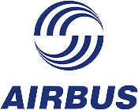
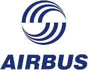

Notre expertise formation
Faster Forward, cabinet de conseil en formation et centre de formation continue, proche des entreprises, a su faire la synthèse d’une double expérience en associant le regard de l’entrepreneuriat de ses dirigeants à plus de 15 ans de savoir faire dans la formation professionnelle.
La réussite des hommes, des femmes et de leurs entreprises est notre passion ; notre esprit d’excellence, notre atout majeur.
Conseil en formation et ingénierie pédagogique
Une formation bien ciblée, efficace et pertinente représente un investissement considérable pour l'entreprise et l'ensemble de ses collaborateurs, et influe de manière importante sur les avancées stratégiques de l'entreprise.
Fort de nombre d'années d’écoute, d’observation, et d’empathie à l'égard du patronat, des équipes de direction, RH et responsables de formation comme des salariés, nous comprenons vite et bien vos attentes, exigences et contraintes. Ainsi, nous sommes à même de vous proposer une offre de formation compétitive, à un excellent rapport qualité-prix.
Le prix du marché de la formation, devenu de plus en plus concurrentiel ces dernières années, a fait que la valeur ajoutée de ses acteurs se trouve aujourd’hui dans la qualité de conception des offres et dans la synergie des moyens humains disponibles et des techniques proposées.
Nous nous déplaçons à votre convenance pour un entretien sans engagement afin d’entendre et étudier votre demande de formation.
Conception de formations sur mesure
Nous élaborons un programme pédagogique complet tenant compte des spécificités de votre marché, métier, et structure d’organisation. Nous formalisons ensemble un véritable concept de formation cadré par les directives et problématiques exprimées par vos interlocuteurs formation.
Sur le terrain, le concept est adapté spécifiquement à la hiérarchie de priorités évoquées dans le bilan initial de vos collaborateurs et par la suite à l'aptitude d’apprentissage de chacun.
Cette pédagogie éprouvée et efficace, alliée aux compétences de nos intervenants hautement performants, sélectionnés pour leur adéquation à votre projet, aura un impact progressif positif sur votre équipe.
Centre de formation professionnelle en continu
Nous disposons de centres et salles de formation sur les pôles d'activité d’Aix en Provence, Marseille, Aubagne et sur toute la région PACA nous permettant d'organiser et déployer des formations dans toute la zone Grand Sud.
Nos salles et centres de formations vous accueillent à proximité de votre zone d'activité ; mais nos formateurs et consultants peuvent également se déplacer dans vos locaux.
Teambuilding
C'est une formation collective qui a pour but de développer la synergie de groupe, souvent choisie par les entreprises pour améliorer la performance de leurs équipes de direction.
Au-delà de la formation en groupe, le team building qui vise à augmenter la complicité et la compétence est aussi un levier pour l'image de marque de l'entreprise.
Nous étudions votre demande pour intégrer au mieux le développement de compétences et la dynamique humaine dans des thématiques de motivation, linguistiques, ou de métier (voir ci-contre).
Coaching
Vous avez un projet, un but, un objectif clairement défini? Mettez de côté la formation et optez pour le coaching. Votre coach est le catalyseur de vos aspirations ; il vous apportera les éléments nécessaires pour aboutir.
Le coach se positionne au même niveau que le coaché. Grâce à des entretiens où le partage d'expérience a sa place, en toute confidentialité, le coach apporte un nouveau regard sur les défis qui se dressent devant le coaché et des moyens appropriés pour réussir, à l’aide de d'outils et d'exercices.
Audit et Conseil
Nous intervenons pour répondre à vos attentes en conseil. Nos experts, avec leur techniques et expérience précieuses, vous aideront à reprendre pied pour transformer les lacunes et faiblesses récurrentes de vos équipes en moyens stratégiques face à vos concurrents.
Nous intervenons alors pour vous permettre de reprendre des parts de marché, rebondir avec un nouveau regard et une confiance nouvelle, ou simplement anticiper les besoins futurs de compétences pour ne pas freiner la croissance de votre entreprise.
Lorsque l’analyse des besoins en formation démontre que les actions prévues ne seront pas judicieuseuse (délais pour être opérationnel trop longs, urgence de la situation, coûts de formation trop importants en termes de temps ou d'argent...), nous vous apportons un regard objectif et impartial sur votre situation en vous apportant une offre créative qui vous permettra de rentabiliser vos investissements formation.
Organisation d’événements et de voyages linguistiques
Notre savoir faire dans l’événementiel linguistique et culturel (britannique et anglophone) nous permettent de proposer des voyages découverte qui allient le meilleur de la formation intensive et du teambuilding.
Formez, motivez et récompensez vos équipes avec un voyage original et fun, à bord d'un Taxi Londonien !
 
